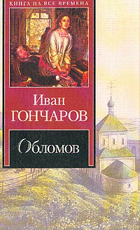

Обломов
Полное многостраничное HTML-издание: весь роман (4 части, 46 глав) на 18 страницах, с закладками, заметками и тремя темами чтения. Работает автономно, без интернета.
«Лежанье у Ильи Ильича не было ни необходимостью, как у больного или как у человека, который хочет спать, ни случайностью, как у того, кто устал, ни наслаждением, как у лентяя: это было его нормальным состоянием.»
И. А. Гончаров. «Обломов», часть первая

Ваши закладки и заметки
Оглавление (18 страниц)
Часть первая
Часть вторая
Часть третья
Часть четвёртая
Текст романа: электронное издание на основе общедоступной версии. Роман вышел в 1859 году, и его текст находится в общественном достоянии.